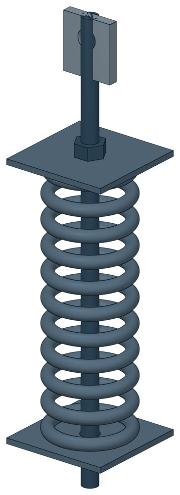

Блок пружинный подвесной ОСТ 24-125-111-01
ОСТ 24-125-111-01. Вертикальная P — до 58,45 кН, масса 5,6–108,2 кг.

- Документ
- ОСТ 24-125-111-01
- Исполнений
- 24
- Вертикальная P
- до 58,45 кН
- Масса
- 5,6–108,2 кг
- 3D-модели
- у всех исполнений (условные: общий вид по габаритам)
Таблица исполнений ОСТ 24-125-111-01
| Обозначение | Код ПРОМБУРГ | PкН | Высота блокамм | Высота пружинымм | Массакг | 3D |
|---|---|---|---|---|---|---|
| 01 ОСТ 24.125.111 | ПБ-24111-0000-1 | 1,26 | 500 | 270 | 7,7 | 3D |
| 02 ОСТ 24.125.111 | ПБ-24111-0000-2 | 2,73 | 500 | 284 | 8,6 | 3D |
| 03 ОСТ 24.125.111 | ПБ-24111-0000-3 | 5,24 | 750 | 308 | 16,5 | 3D |
| 04 ОСТ 24.125.111 | ПБ-24111-0000-4 | 8 | 750 | 327 | 18,4 | 3D |
| 05 ОСТ 24.125.111 | ПБ-24111-0000-5 | 11,67 | 750 | 346 | 21,3 | 3D |
| 06 ОСТ 24.125.111 | ПБ-24111-0000-6 | 16,34 | 685 | 369 | 25,3 | 3D |
| 07 ОСТ 24.125.111 | ПБ-24111-0000-7 | 19,66 | 685 | 414 | 29,5 | 3D |
| 08 ОСТ 24.125.111 | ПБ-24111-0000-8 | 26,34 | 685 | 399 | 44,9 | 3D |
| 09 ОСТ 24.125.111 | ПБ-24111-0000-9 | 32,6 | 805 | 507 | 62,1 | 3D |
| 10 ОСТ 24.125.111 | ПБ-24111-0000-10 | 40 | 805 | 528 | 74,4 | 3D |
| 11 ОСТ 24.125.111 | ПБ-24111-0000-11 | 48,6 | 845 | 549 | 80,3 | 3D |
| 12 ОСТ 24.125.111 | ПБ-24111-0000-12 | 58,45 | 845 | 508 | 108,2 | 3D |
| Обозначение | Код ПРОМБУРГ | PкН | Высота блокамм | Высота пружинымм | Массакг | 3D |
|---|---|---|---|---|---|---|
| 21 ОСТ 24.125.111 | ПБ-24111-0000-13 | 1,26 | 350 | 143 | 5,6 | 3D |
| 22 ОСТ 24.125.111 | ПБ-24111-0000-14 | 2,73 | 350 | 151 | 6,1 | 3D |
| 23 ОСТ 24.125.111 | ПБ-24111-0000-15 | 5,24 | 510 | 166 | 11,7 | 3D |
| 24 ОСТ 24.125.111 | ПБ-24111-0000-16 | 8 | 510 | 177 | 12,7 | 3D |
| 25 ОСТ 24.125.111 | ПБ-24111-0000-17 | 11,67 | 510 | 188 | 14,6 | 3D |
| 26 ОСТ 24.125.111 | ПБ-24111-0000-18 | 16,34 | 455 | 201 | 17,5 | 3D |
| 27 ОСТ 24.125.111 | ПБ-24111-0000-19 | 19,66 | 455 | 226 | 19,8 | 3D |
| 28 ОСТ 24.125.111 | ПБ-24111-0000-20 | 26,34 | 650 | 221 | 33,5 | 3D |
| 29 ОСТ 24.125.111 | ПБ-24111-0000-21 | 32,6 | 595 | 277 | 41,8 | 3D |
| 30 ОСТ 24.125.111 | ПБ-24111-0000-22 | 40 | 595 | 289 | 51,3 | 3D |
| 31 ОСТ 24.125.111 | ПБ-24111-0000-23 | 48,6 | 535 | 304 | 55,7 | 3D |
| 32 ОСТ 24.125.111 | ПБ-24111-0000-24 | 58,45 | 535 | 284 | 76,9 | 3D |
Чтобы заказать, сообщите обозначение и код ПРОМБУРГ: +7 (499) 325-51-35, promburg@yandex.ru.
Нормативные документы
- ОСТ 24.125.111-01 Подвески трубопроводов ТЭС и АЭС. Блоки пружинные подвесные. Конструкция и размеры — документ, по которому изготавливается изделие
Другие типы раздела
Подвески и пружинные блоки по ОСТ 24.125.111…125
- Опорные пружинные блоки ОСТ 24-125-112-01
- Блок хомутовый ОСТ 24-125-113-01
- Полухомуты для хомутовых блоков подвесок горизонтальных трубопроводов из хромо молибден о ванадиевых сталей ОСТ 24-125-114-01
- Блоки хомутовые с траверсой ОСТ 24-125-116-01
- Хомуты сварные ОСТ 24-125-117-01
- Подвески хомутовые на опорной балке с проушинами ОСТ 24-125-118-01
- Корпус на опорной балке с проушинами ОСТ 24-125-119-01
- Полухомут для хомутовых опор ОСТ 24-125-120-01
- Балки опорные с проушинами ОСТ 24-125-121-01
- Подвески пружинные хомутовые на опорной балке ОСТ 24-125-122-01
- Корпус на опорной балке для пружин ОСТ 24-125-123-01
- Балки опорные для пружин ОСТ 24-125-124-01
- Подвески приварные на опорной балке с проушинами ОСТ 24-125-125-01
Частые вопросы
По какому диаметру подбирать — Dн или Ду?
По наружному диаметру трубы Dн: именно он стоит в таблицах серии. Ду — условный проход, округлённая величина: Ду 100 соответствует Dн 108. В заявке указывайте Dн и толщину стенки трубы.
В старом проекте нагрузка в тс, а здесь в кН. Как сравнить?
Серия 4.903-10 даёт нагрузки в тонна-силах, серия 5.903-13 — в килоньютонах. 1 тс = 9,81 кН, то есть 10 тс — это около 98 кН. В таблицах каталога переключатель единиц пересчитывает значения.
Из какой стали изготавливаются опоры?
По рабочим чертежам серии листовые детали — Ст3сп5 ГОСТ 14637-89, хомуты из круга — сталь 20 ГОСТ 1050-88. Для районов с низкой расчётной температурой воздуха применяется низколегированная сталь, в том числе 09Г2С; размеры опор при этом не меняются. В заявке укажите расчётную температуру наружного воздуха.
Почему часть поверхностей опоры не окрашена?
Поверхности под приварку к трубе и к несущей конструкции оставляют без краски, иначе шов получится некачественным. Их консервируют смазкой, которую снимают перед сваркой.
Что указать в заявке, чтобы получить цену без уточнений?
Обозначение с номером исполнения или код ПБ, количество, Dн и стенку трубы, расчётную температуру наружного воздуха, покрытие, город доставки и желаемый срок. Кнопка «В заявку» в таблице собирает спецификацию, которую можно выгрузить в Excel или отправить письмом.